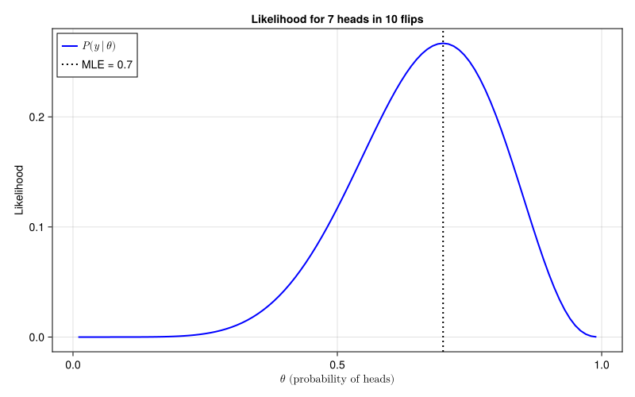
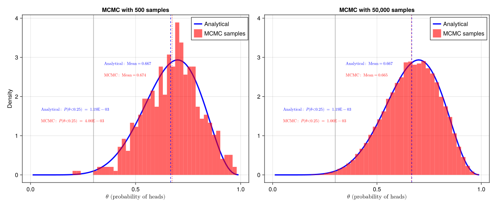

using CairoMakie
using Distributions
using LaTeXStrings
using Turing
using Printf
using Random
using StatsBase
using HypothesisTests
using Optim- 1
-
We use
usingto import necessary packages
This notebook provides computational examples to accompany the Probability and inference chapter. See also: Moquito bites and beer consumption
using CairoMakie
using Distributions
using LaTeXStrings
using Turing
using Printf
using Random
using StatsBase
using HypothesisTests
using Optimusing to import necessary packages
Understanding probability distributions requires grasping three fundamental functions: the probability density function (PDF) or probability mass function (PMF), the cumulative distribution function (CDF), and the quantile function. These examples demonstrate how these functions work together using the normal distribution (continuous) and Poisson distribution (discrete).
The visualizations show both forward operations (finding probabilities from values using the CDF) and inverse operations (finding values from probabilities using quantiles). This computational perspective reinforces the theoretical relationships discussed in the main chapter.
We start by defining some helper functions.
function add_pdf_area!(ax, dist, a, b; color = (:orange, 0.4), label = nothing)
x_fill = a:0.01:b
pdf_fill = pdf.(dist, x_fill)
band!(ax, x_fill, zeros(length(x_fill)), pdf_fill, color = color, label = label)
prob = cdf(dist, b) - cdf(dist, a)
return prob
end
function add_forward_cdf!(ax, dist, x_point; color = :red, x_min = -4)
y_point = cdf(dist, x_point)
scatter!(ax, [x_point], [y_point], color = color, markersize = 8)
lines!(ax, [x_point, x_point], [0, y_point], color = color, linestyle = :dash)
lines!(ax, [x_min, x_point], [y_point, y_point], color = color, linestyle = :dash)
return y_point
end
function add_inverse_cdf!(ax, dist, p_target; color = :green, x_min = -4)
x_inv = quantile(dist, p_target)
y_actual = cdf(dist, x_inv)
scatter!(ax, [x_inv], [y_actual], color = color, markersize = 8)
lines!(ax, [x_inv, x_inv], [0, y_actual], color = color, linestyle = :dash)
lines!(ax, [x_min, x_inv], [p_target, p_target], color = color, linestyle = :dash)
return x_inv, y_actual
endPDF curve between bounds \(a\) and \(b\). By convention a function that ends in ! modifies its arguments (in this case, a plot axis).
PDF using broadcasting (the . operator)CDF difference: \(P(a \leq X \leq b) = F(b) - F(a)\)
CDF operation: given \(x\), find \(F(x) = P(X \leq x)\)
CDF operation: given probability \(p\), find \(x\) such that \(F(x) = p\)CDF
Next, we use Makie.jl to creat the plot.
function plot_normal_pdf_cdf()
μ, σ = 0.0, 1.0
x_range = -4:0.01:4
normal_dist = Normal(μ, σ)
fig = Figure(size = (900, 400))
ax1 = Axis(fig[1, 1],
xlabel = L"x",
ylabel = L"\text{Density } $p(x)$",
title = "Normal(0, 1) PDF")
lines!(ax1, x_range, pdf.(normal_dist, x_range),
color = :blue, linewidth = 2, label = L"p(x)")
prob_area = add_pdf_area!(ax1, normal_dist, -1, 1,
label = L"P(-1 \leq X \leq 1)")
text!(ax1, -0.6, 0.125,
text = L"\text{Area} = %$(round(prob_area, digits=3))",
fontsize = 14, color = :black)
axislegend(ax1, position = :rt)
ax2 = Axis(fig[1, 2],
xlabel = L"x",
ylabel = L"\text{Probability } $F(x)$",
title = "Normal CDF: Forward and Inverse")
lines!(ax2, x_range, cdf.(normal_dist, x_range),
color = :blue, linewidth = 2, label = L"$F(x)$")
y_point = add_forward_cdf!(ax2, normal_dist, 1.0)
text!(ax2, 1.2, y_point - 0.1,
text = L"F(1) = %$(round(y_point, digits=3))", color = :red)
x_inv, _ = add_inverse_cdf!(ax2, normal_dist, 0.25)
text!(ax2, x_inv - 0.8, 0.35,
text = L"F^{-1}(0.25) = %$(round(x_inv, digits=2))", color = :green)
axislegend(ax2, position = :rb)
return fig
end
fig_normal = plot_normal_pdf_cdf()
fig_normalNormal(0,1) distribution object from Distributions.jl
PDF using vectorized evaluation over x_range
CDF showing cumulative probabilities
The normal distribution demonstrates these concepts for continuous variables, where probabilities correspond to areas under smooth curves. Next, we examine the Poisson distribution for discrete random variables, where probabilities correspond to point masses and the CDF becomes a step function.
We define some more helper functions for discrete distributions.
function plot_pmf_stems!(ax, dist, x_range; color = :blue, linewidth = 3, markersize = 8)
pmf_vals = pdf.(dist, x_range)
for (i, x) in enumerate(x_range)
lines!(ax, [x, x], [0, pmf_vals[i]], color = color, linewidth = linewidth)
scatter!(ax, [x], [pmf_vals[i]], color = color, markersize = markersize)
end
return pmf_vals
end
function highlight_pmf_mass!(ax, dist, x_range; color = :orange)
pmf_vals = pdf.(dist, x_range)
for (i, x) in enumerate(x_range)
lines!(ax, [x, x], [0, pmf_vals[i]], color = color, linewidth = 5)
scatter!(ax, [x], [pmf_vals[i]], color = color, markersize = 10)
end
return sum(pmf_vals)
end
function plot_discrete_cdf!(ax, dist, x_range; color = :blue, linewidth = 2, markersize = 6)
cdf_vals = cdf.(dist, x_range)
for i in 1:(length(x_range)-1)
lines!(ax, [x_range[i], x_range[i+1]], [cdf_vals[i], cdf_vals[i]],
color = color, linewidth = linewidth)
end
scatter!(ax, x_range, cdf_vals, color = color, markersize = markersize)
return cdf_vals
end
function add_discrete_forward_cdf!(ax, dist, x_point; color = :red, x_min = 0)
y_point = cdf(dist, x_point)
scatter!(ax, [x_point], [y_point], color = color, markersize = 10)
lines!(ax, [x_point, x_point], [0, y_point], color = color, linestyle = :dash)
lines!(ax, [x_min, x_point], [y_point, y_point], color = color, linestyle = :dash)
return y_point
end
function add_discrete_inverse_cdf!(ax, dist, p_target; color = :green, x_min = 0)
x_inv = quantile(dist, p_target)
y_actual = cdf(dist, x_inv)
scatter!(ax, [x_inv], [y_actual], color = color, markersize = 10)
lines!(ax, [x_min, x_inv], [p_target, p_target], color = color, linestyle = :dash)
return x_inv, y_actual
endpdf() returns probability mass \(P(X = x)\)
CDF
CDF values between integers
Now we create the plot for the Poisson distribution.
function plot_poisson_pmf_cdf()
λ = 3.0
x_range = 0:10
poisson_dist = Poisson(λ)
fig = Figure(size = (900, 400))
ax1 = Axis(fig[1, 1],
xlabel = L"x",
ylabel = L"P(X = x)",
title = L"\text{Poisson}(3) \text{ PMF}",
xticks = 1:10)
plot_pmf_stems!(ax1, poisson_dist, x_range)
prob_mass = highlight_pmf_mass!(ax1, poisson_dist, 0:2)
text!(ax1, 6, 0.15,
text = L"P(X \leq 2) = %$(round(prob_mass, digits=3))",
fontsize = 14, color = :black)
ax2 = Axis(fig[1, 2],
xlabel = L"x",
ylabel = L"\text{Probability } F(x)",
title = L"\text{Poisson CDF: Forward and Inverse}",
xticks = 1:10)
plot_discrete_cdf!(ax2, poisson_dist, x_range)
y_point = add_discrete_forward_cdf!(ax2, poisson_dist, 4)
text!(ax2, 4.2, y_point - 0.1,
text = L"F(4) = %$(round(y_point, digits=3))", color = :red)
x_inv, _ = add_discrete_inverse_cdf!(ax2, poisson_dist, 0.4)
text!(ax2, x_inv - 1.5, 0.5,
text = L"F^{-1}(0.4) = %$(Int(x_inv))", color = :green)
return fig
end
fig_poisson = plot_poisson_pmf_cdf()
fig_poissonThis example demonstrates the relationships between joint, marginal, and conditional distributions using a bivariate normal distribution. The visualization shows how these concepts connect: marginal distributions are the “shadows” of the joint distribution, while conditional distributions are “slices” at specific values.
function plot_joint_marginal_conditional()
# Parameters for bivariate normal
μ₁, μ₂ = 2.0, 1.0
σ₁, σ₂ = 1.0, 0.8
ρ = 0.6 # correlation coefficient
# Create bivariate normal distribution
Σ = [σ₁^2 ρ*σ₁*σ₂; ρ*σ₁*σ₂ σ₂^2]
mvn = MvNormal([μ₁, μ₂], Σ)
# Generate samples
Random.seed!(123)
n_samples = 1000
samples = rand(mvn, n_samples)
x_samples = samples[1, :]
y_samples = samples[2, :]
# Create figure with custom layout
fig = Figure(size = (1000, 800))
# Main scatter plot (bottom left)
ax_main = Axis(fig[2, 1],
xlabel = L"X",
ylabel = L"Y",
title = "Joint Distribution")
# Scatter plot of samples
scatter!(ax_main, x_samples, y_samples,
color = (:blue, 0.4), markersize = 4)
# Add conditional distribution line (vertical slice at x=2.5)
x_condition = 2.5
vlines!(ax_main, [x_condition], color = :red, linewidth = 3,
linestyle = :dash, label = L"$X = %$(x_condition)$")
# Marginal histogram for X (top)
ax_top = Axis(fig[1, 1],
ylabel = "Density",
title = L"\text{Marginal Distribution of }X")
hist!(ax_top, x_samples, bins = 30, normalization = :pdf,
color = (:green, 0.6))
# Plot true marginal density
x_range = range(-1, 5, length = 100)
marginal_x = Normal(μ₁, σ₁)
lines!(ax_top, x_range, pdf.(marginal_x, x_range),
color = :green, linewidth = 3, label = "True marginal")
# Add vertical line at conditioning value
vlines!(ax_top, [x_condition], color = :red, linewidth = 2, linestyle = :dash)
# Marginal histogram for Y (right)
ax_right = Axis(fig[2, 2],
xlabel = "Density",
title = L"Marginal Distribution of $Y$")
# Rotate histogram for Y (plot horizontally)
hist!(ax_right, y_samples, bins = 30, normalization = :pdf,
color = (:orange, 0.6), direction = :x)
# Plot true marginal density
y_range = range(-2, 4, length = 100)
marginal_y = Normal(μ₂, σ₂)
lines!(ax_right, pdf.(marginal_y, y_range), y_range,
color = :orange, linewidth = 3, label = "True marginal")
# Conditional distribution plot (top right)
ax_cond = Axis(fig[1, 2],
xlabel = L"Y",
ylabel = "Conditional Density",
title = L"Conditional: $p(Y \mid X = %$(x_condition))$")
# Calculate conditional distribution parameters
# For bivariate normal: Y|X ~ N(μ₂ + ρ(σ₂/σ₁)(x - μ₁), σ₂²(1 - ρ²))
μ_conditional = μ₂ + ρ * (σ₂ / σ₁) * (x_condition - μ₁)
σ_conditional = σ₂ * sqrt(1 - ρ^2)
conditional_dist = Normal(μ_conditional, σ_conditional)
# Plot conditional distribution
lines!(ax_cond, y_range, pdf.(conditional_dist, y_range),
color = :red, linewidth = 3, label = L"$p(y | X = %$(x_condition))$")
# Highlight samples near the conditioning value
tolerance = 0.2
near_condition = abs.(x_samples .- x_condition) .< tolerance
y_near = y_samples[near_condition]
hist!(ax_cond, y_near, bins = 15, normalization = :pdf,
color = (:red, 0.4), label = L"\text{Samples of $y$ given $X \approx %$(x_condition)$}")
# Link axes appropriately
linkxaxes!(ax_main, ax_top)
linkyaxes!(ax_main, ax_right)
# Hide x-axis labels for top plot
hidexdecorations!(ax_top, grid = false)
# Hide y-axis labels for right plot
hideydecorations!(ax_right, grid = false)
# Add legends
axislegend(ax_main, position = :rt)
axislegend(ax_cond, position = :rt)
return fig
end
fig_joint = plot_joint_marginal_conditional()
fig_jointMvNormal
Having explored the foundational concepts of probability distributions, we now turn to statistical inference—the process of learning about unknown parameters from observed data.
The coin flip example provides a pedagogically clean introduction to statistical inference. We observe a series of coin flips and want to infer the probability \(\theta\) of heads. This simple setup allows us to demonstrate maximum likelihood estimation, Bayesian inference, and the relationship between analytical and computational approaches.
The likelihood function shows how plausible different values of \(\theta\) are given our observed data. For the Binomial model, this creates a clear peak at the observed proportion of heads.
function plot_binomial_likelihood(y, n)
θ_grid = 0.01:0.01:0.99
# Using Distributions.jl
likelihood_vals = [pdf(Binomial(n, θ), y) for θ in θ_grid]
fig = Figure(size = (800, 500))
ax = Axis(fig[1, 1],
xlabel = L"$\theta$ (probability of heads)",
ylabel = "Likelihood",
title = "Likelihood for $(y) heads in $(n) flips")
lines!(ax, θ_grid, likelihood_vals, label = L"$P(y \mid \theta)$", linewidth = 2, color = :blue)
# Mark the MLE
mle = y / n
vlines!(ax, [mle], color = :black, linestyle = :dot, linewidth = 2, label = "MLE = $(round(mle, digits=2))")
axislegend(ax, position = :lt)
return fig
end
# Example with 7 heads in 10 flips
fig_likelihood = plot_binomial_likelihood(7, 10)
fig_likelihood
The likelihood peaks at \(\theta = 0.7\) when we observe 7 heads out of 10 flips. This demonstrates that the maximum likelihood estimate is simply the observed proportion.
Maximum likelihood estimation finds the parameter value that makes the observed data most probable. For the coin flip problem, we can solve this analytically by taking the derivative of the log-likelihood and setting it to zero. The following shows how the MLE varies with different numbers of observed heads:
function demonstrate_mle_estimation(y_values, n)
θ_grid = 0.01:0.01:0.99
fig = Figure(size = (800, 600))
for (i, y) in enumerate(y_values)
ax = Axis(fig[div(i - 1, 2)+1, ((i-1)%2)+1],
xlabel = L"\theta",
ylabel = "Log-likelihood",
title = "$(y)/$(n) heads")
log_likelihood = [y * log(θ) + (n - y) * log(1 - θ) for θ in θ_grid]
lines!(ax, θ_grid, log_likelihood, linewidth = 2, color = :blue)
mle = y / n
vlines!(ax, [mle], color = :red, linestyle = :dash, linewidth = 2,
label = "MLE")
if i == 1
axislegend(ax, position = :cb)
end
end
return fig
end
# Show MLE for different outcomes
fig_mle = demonstrate_mle_estimation([3, 5, 7, 9], 10)
fig_mleMLE for 3, 5, 7, and 9 heads out of 10 flips
Each plot shows the log-likelihood function as a smooth curve with its maximum clearly indicated. Notice that the MLE is always at the observed proportion \(\frac{y}{n}\), confirming our analytical derivation.
Bayesian inference treats the parameter \(\theta\) as a random variable with its own probability distribution. We start with a prior belief about \(\theta\), observe data, and update our beliefs to get the posterior distribution.
For the coin flip problem with a Beta prior, we can compute the posterior analytically using conjugacy. The posterior parameters are simply the prior parameters plus the observed successes and failures. This example compares the exact analytical solution with MCMC sampling.
First we define the Turing.jl model and the comparison function. See the official Turing.jl documentation and tutorials.
# Turing model for coin flipping
@model function coin_flip_model(y, n, prior_α, prior_β)
θ ~ Beta(prior_α, prior_β)
y ~ Binomial(n, θ)
return θ
endTuring.jl probabilistic programming model specification using @model macro
coin_flip_model (generic function with 2 methods)Next we define a function to help us create the data and fits
function compare_analytical_mcmc(y, n; prior_α = 1, prior_β = 1, n_samples = 5000)
# Analytical posterior
post_α = prior_α + y
post_β = prior_β + n - y
analytical_posterior = Beta(post_α, post_β)
# MCMC sampling
model = coin_flip_model(y, n, prior_α, prior_β)
chain = sample(model, NUTS(), n_samples, verbose = false, progress = false)
mcmc_samples = Array(chain[:θ])
# Return data for plotting instead of creating plots
return (analytical_posterior = analytical_posterior, mcmc_samples = mcmc_samples, n_samples = n_samples)
end
# Generate data by calling the same function twice
data_low = compare_analytical_mcmc(7, 10, n_samples = 500)
data_high = compare_analytical_mcmc(7, 10, n_samples = 50_000)Beta-Binomial conjugacy
NUTS)
Array(chain[:θ])
┌ Info: Found initial step size └ ϵ = 1.6 ┌ Info: Found initial step size └ ϵ = 1.6
(analytical_posterior = Distributions.Beta{Float64}(α=8.0, β=4.0), mcmc_samples = [0.8214313405535059; 0.646445076138614; … ; 0.5588684710867051; 0.6492558369061647;;], n_samples = 50000)And then we plot
# Combine plots
fig_comparison = Figure(size = (1200, 500))
ax1 = Axis(fig_comparison[1, 1],
xlabel = L"$\theta$ (probability of heads)",
ylabel = "Density",
title = "MCMC with 500 samples")
ax2 = Axis(fig_comparison[1, 2],
xlabel = L"$\theta$ (probability of heads)",
title = "MCMC with 50,000 samples")
# Link y-axes for comparison
linkaxes!(ax1, ax2)
# Plot using the same plotting logic for both panels
for (ax, data) in [(ax1, data_low), (ax2, data_high)]
# Plot analytical posterior
θ_grid = 0.01:0.01:0.99
analytical_density = pdf.(data.analytical_posterior, θ_grid)
lines!(ax, θ_grid, analytical_density, label = "Analytical",
linewidth = 3, color = :blue)
# Plot MCMC histogram
hist!(ax, vec(data.mcmc_samples), bins = 40, normalization = :pdf,
color = (:red, 0.6), label = "MCMC samples")
# Add summary statistics
analytical_mean = mean(data.analytical_posterior)
mcmc_mean = mean(data.mcmc_samples)
# Vertical lines for means
vlines!(ax, [analytical_mean], color = :blue, linestyle = :dash, alpha = 0.8)
vlines!(ax, [mcmc_mean], color = :red, linestyle = :dot, alpha = 0.8)
# Add vertical line at 0.3 to show tail cutoff
vlines!(ax, [0.3], color = :gray, linestyle = :solid, alpha = 0.6)
# Add text annotations with statistics
text!(ax, 0.35, maximum(analytical_density) * 0.95,
text = L"\text{Analytical: Mean} = %$(round(analytical_mean, digits=3))",
fontsize = 10, color = :blue)
text!(ax, 0.35, maximum(analytical_density) * 0.85,
text = L"\text{MCMC: Mean} = %$(round(mcmc_mean, digits=3))",
fontsize = 10, color = :red)
# Calculate P(theta < 0.25) - tail probability
tail = 0.25
analytical_tail_prob = cdf(data.analytical_posterior, tail)
analytical_tail_prob = @sprintf("%.2E", analytical_tail_prob)
mcmc_tail_prob = mean(data.mcmc_samples .< tail)
mcmc_tail_prob = @sprintf("%.2E", mcmc_tail_prob)
text!(ax, 0.05, maximum(analytical_density) * 0.55,
text = L"\text{Analytical}: $P(\theta < %$(tail))$ = %$(analytical_tail_prob)",
fontsize = 10, color = :blue)
text!(ax, 0.05, maximum(analytical_density) * 0.45,
text = L"\text{MCMC}: $P(\theta < %$(tail))$ = %$(mcmc_tail_prob)",
fontsize = 10, color = :red)
axislegend(ax, position = :rt)
end
fig_comparisonMCMC samples
CDF
MCMC samples

The results show excellent agreement between analytical and MCMC approaches. With sufficient samples, MCMC accurately approximates the true posterior distribution. The comparison also illustrates how MCMC precision varies across the distribution—central quantities like the mean are estimated more accurately than tail probabilities.
This example demonstrates how Bayesian updating works step by step. We start with a Beta(3,3) prior and observe a sequence of coin flips from a coin with true probability θ = 0.55. Each subplot shows how the posterior distribution evolves as new evidence arrives.
function demonstrate_bayesian_updating()
# True parameter and prior
true_θ = 0.55
prior_α, prior_β = 3, 3
# Generate sequence of coin flips
Random.seed!(42)
n_total = 12
flips = rand(n_total) .< true_θ # true = heads, false = tails
# Convert to H/T string for display
flip_chars = [f ? "H" : "T" for f in flips]
# Stages to show (number of flips observed)
stages = [1, 3, 5, 8, 12]
# Create figure with subplots
fig = Figure(size = (1000, 600))
θ_range = 0:0.01:1
for (i, stage) in enumerate(stages)
# Calculate posterior parameters
y_obs = sum(flips[1:stage]) # heads observed so far
n_obs = stage # total flips observed
post_α = prior_α + y_obs
post_β = prior_β + n_obs - y_obs
# Create subplot
row = div(i - 1, 3) + 1
col = ((i - 1) % 3) + 1
ax = Axis(fig[row, col],
xlabel = "θ (probability of heads)",
ylabel = "Density",
title = "$(join(flip_chars[1:stage])) ($(y_obs)/$(n_obs) heads)")
# Plot prior (only for first subplot)
if i == 1
prior_density = pdf.(Beta(prior_α, prior_β), θ_range)
lines!(ax, θ_range, prior_density,
color = :gray, linewidth = 2, linestyle = :dash, label = "Prior Beta(3,3)")
end
# Plot posterior
posterior = Beta(post_α, post_β)
posterior_density = pdf.(posterior, θ_range)
lines!(ax, θ_range, posterior_density,
color = :blue, linewidth = 3, label = "Posterior")
# Add vertical lines
vlines!(ax, [true_θ], color = :green, linewidth = 2, linestyle = :dot,
label = i == 1 ? "True θ = $(true_θ)" : "")
# MLE estimate
mle_θ = stage == 0 ? 0.5 : y_obs / n_obs
vlines!(ax, [mle_θ], color = :red, linewidth = 2, linestyle = :dashdot,
label = i == 1 ? "MLE" : "")
# Posterior mean
post_mean = post_α / (post_α + post_β)
vlines!(ax, [post_mean], color = :blue, linewidth = 2, alpha = 0.7,
label = i == 1 ? "Posterior mean" : "")
# Add text with posterior parameters
text!(ax, 0.05, maximum(posterior_density) * 0.9,
text = "Beta($(post_α), $(post_β))",
fontsize = 11, color = :blue)
# Add 95% credible interval
ci_lower = quantile(posterior, 0.025)
ci_upper = quantile(posterior, 0.975)
text!(ax, 0.05, maximum(posterior_density) * 0.75,
text = "95% CI: [$(round(ci_lower, digits=2)), $(round(ci_upper, digits=2))]",
fontsize = 10, color = :black)
# Set consistent x-axis limits
xlims!(ax, 0, 1)
end
# Add legend in the sixth panel (bottom right)
ax_legend = Axis(fig[2, 3],
xlabel = "θ (probability of heads)",
ylabel = "Density")
# Create dummy plots for legend
lines!(ax_legend, [0, 0], [0, 0], color = :gray, linewidth = 2, linestyle = :dash, label = "Prior Beta(3,3)")
lines!(ax_legend, [0, 0], [0, 0], color = :blue, linewidth = 3, label = "Posterior")
vlines!(ax_legend, [0], color = :green, linewidth = 2, linestyle = :dot, label = "True θ = $(true_θ)")
vlines!(ax_legend, [0], color = :red, linewidth = 2, linestyle = :dashdot, label = "MLE")
vlines!(ax_legend, [0], color = :blue, linewidth = 2, alpha = 0.7, label = "Posterior mean")
axislegend(ax_legend, position = :cc, framevisible = true)
hidespines!(ax_legend)
hidedecorations!(ax_legend)
# Add overall title
Label(fig[0, :], "Bayesian Updating: How Posterior Evolves with New Evidence",
fontsize = 16, font = "TeX Gyre Heros Bold")
return fig
end
fig_updating = demonstrate_bayesian_updating()
fig_updatingThis visualization shows several key insights:
The coin flip example demonstrated inference for a single parameter using a simple likelihood function. Real-world problems typically involve multiple parameters and more complex relationships between variables. Linear regression provides our first example of multivariate statistical inference while maintaining analytical tractability.
This example demonstrates the progression from curve fitting to probabilistic inference. We’ll examine the same problem through three lenses: minimizing prediction error, maximum likelihood estimation, and Bayesian inference. All three approaches yield the same parameter estimates for the linear model with normal errors, but provide different ways of quantifying uncertainty.
We start by creating synthetic data from a known linear relationship with added noise. This allows us to verify that our inference methods recover the true parameters.
# Set parameters for data generation
Random.seed!(42)
n_obs = 30
true_intercept = 2.0
true_slope = 1.5
true_sigma = 1.5
# Generate predictor variables
x_reg = sort(rand(Uniform(0, 5), n_obs))
# Generate response with linear relationship plus noise
y_reg = true_intercept .+ true_slope .* x_reg .+ rand(Normal(0, true_sigma), n_obs)
# Store true parameter values for comparison
true_params = (intercept = true_intercept, slope = true_slope, sigma = true_sigma)Let’s visualize our synthetic dataset:
function plot_synthetic_data(x_data, y_data, true_params)
fig = Figure(size = (700, 500))
ax = Axis(fig[1, 1],
xlabel = "x",
ylabel = "y",
title = "Synthetic Linear Regression Dataset")
# Plot data points
scatter!(ax, x_data, y_data, color = :blue, markersize = 8, label = "Observed data")
# Plot true relationship
x_line = range(minimum(x_data), maximum(x_data), length = 100)
y_true = true_params.intercept .+ true_params.slope .* x_line
lines!(ax, x_line, y_true, color = :red, linewidth = 3,
label = L"\text{True relationship: } $y = %$(true_params.intercept) + %$(true_params.slope) x$")
# Add noise band to show true sigma
y_upper = y_true .+ 2 * true_params.sigma
y_lower = y_true .- 2 * true_params.sigma
band!(ax, x_line, y_lower, y_upper, color = (:red, 0.2),
label = L"$\pm 2 \sigma$")
axislegend(ax, position = :lt)
return fig
end
fig_data = plot_synthetic_data(x_reg, y_reg, true_params)
fig_dataThis visualization shows our synthetic dataset with the true linear relationship and noise level. The scattered points represent our “observations,” while the red line shows the true underlying relationship we’re trying to recover. The shaded band indicates the expected range of observations given the noise level (\(\pm 2\sigma\)).
Without probability theory, we can view regression as finding the line that best fits the data. This requires choosing a loss function to measure fit quality. The most common choice is mean squared error (MSE), which penalizes large prediction errors more than small ones. This is more of a “machine learning” perspective on the problem, and is one to which we return in the ML chapter.
function fit_least_squares(x_data, y_data)
n = length(x_data)
x_bar = mean(x_data)
y_bar = mean(y_data)
# Analytical least squares formulas
slope = sum((x_data .- x_bar) .* (y_data .- y_bar)) / sum((x_data .- x_bar) .^ 2)
intercept = y_bar - slope * x_bar
# Calculate residuals and MSE
y_pred = intercept .+ slope .* x_data
residuals = y_data .- y_pred
mse = mean(residuals .^ 2)
return (intercept = intercept, slope = slope, mse = mse, residuals = residuals, predictions = y_pred)
end
function plot_least_squares_fit(x_data, y_data, fit_results)
fig = Figure(size = (800, 500))
ax = Axis(fig[1, 1],
xlabel = "x",
ylabel = "y",
title = "Least Squares Curve Fitting")
# Plot data points
scatter!(ax, x_data, y_data, color = :blue, markersize = 8, label = "Data")
# Plot fitted line
x_line = range(minimum(x_data), maximum(x_data), length = 100)
y_line = fit_results.intercept .+ fit_results.slope .* x_line
lines!(ax, x_line, y_line, color = :red, linewidth = 2,
label = L"\text{Fitted line:} $y = %$(round(fit_results.intercept, digits=2)) + %$(round(fit_results.slope, digits=2)) x$")
# Show residuals as vertical lines
for i in eachindex(x_data)
lines!(ax, [x_data[i], x_data[i]], [y_data[i], fit_results.predictions[i]],
color = :gray, linestyle = :dash, alpha = 0.7, linewidth = 1)
end
# Add true line for comparison
y_true_line = true_params.intercept .+ true_params.slope .* x_line
lines!(ax, x_line, y_true_line, color = :green, linewidth = 2, linestyle = :dot,
label = L"\text{True line: } $y = %$(true_params.intercept) + %$(true_params.slope)x$")
axislegend(ax, position = :lt)
return fig
end
# Fit the model and create visualization
ols_fit = fit_least_squares(x_reg, y_reg)
fig_curve_fit = plot_least_squares_fit(x_reg, y_reg, ols_fit)
fig_curve_fitThe least squares method finds parameter estimates close to the true values. The residual lines visualize the model’s prediction errors, with shorter lines indicating better fit.
The curve fitting approach works but provides no way to quantify uncertainty in our parameter estimates. By introducing a probabilistic model, we can use maximum likelihood estimation to both estimate parameters and assess their precision.
For linear regression, we assume the response follows a normal distribution around the linear predictor:
\[ y_i \sim N(\alpha + \beta x_i, \sigma^2) \]
as discussed in the theory section. Using the Optim package, we can numerically maximize the likelihood function to find the MLE estimates for \(\alpha\), \(\beta\), and \(\sigma\). In Optim, all functions are minimized, so we minimize the negative log-likelihood instead.
function negative_log_likelihood(params, x_data, y_data)
α, β, σ = params
if σ <= 0
return Inf
end
# Calculate predicted values
μ = α .+ β .* x_data
# Sum of negative log-likelihoods for each observation
nll = 0.0
for i in eachindex(y_data)
nll += -logpdf(Normal(μ[i], σ), y_data[i])
end
return nll
end
function find_mle_estimates(x_data, y_data; initial_guess = [0.0, 1.0, 1.0])
# Use optimization to find MLE
result = optimize(params -> negative_log_likelihood(params, x_data, y_data),
initial_guess, NelderMead())
if !Optim.converged(result)
@warn "MLE optimization did not converge"
end
mle_params = Optim.minimizer(result)
return (intercept = mle_params[1], slope = mle_params[2], sigma = mle_params[3])
end
# Find MLE estimates
mle_estimates = find_mle_estimates(x_reg, y_reg)
println("MLE Estimates:")
println(" Intercept: $(round(mle_estimates.intercept, digits=3))")
println(" Slope: $(round(mle_estimates.slope, digits=3))")
println(" Sigma: $(round(mle_estimates.sigma, digits=3))")
println()
println("True Parameters:")
println(" Intercept: $(true_params.intercept)")
println(" Slope: $(true_params.slope)")
println(" Sigma: $(true_params.sigma)")
println()
println("Least Squares Estimates (for comparison):")
println(" Intercept: $(round(ols_fit.intercept, digits=3))")
println(" Slope: $(round(ols_fit.slope, digits=3))")MLE using numerical optimization
MLE Estimates:
Intercept: 1.851
Slope: 1.584
Sigma: 1.492
True Parameters:
Intercept: 2.0
Slope: 1.5
Sigma: 1.5
Least Squares Estimates (for comparison):
Intercept: 1.851
Slope: 1.584The MLE estimates for the intercept and slope match the least squares results exactly. This confirms the theoretical result that for linear regression with normal errors, maximum likelihood estimation is equivalent to minimizing mean squared error. The MLE approach additionally estimates \(\sigma\), quantifying the noise level in the data.
Bayesian inference treats all parameters as random variables with probability distributions. We specify prior beliefs, observe data, and compute posterior distributions that quantify parameter uncertainty.
# Define Turing.jl model for Bayesian linear regression
@model function linear_regression_model(x, y)
n = length(y)
# Priors
α ~ Normal(0, 5)
β ~ Normal(0, 5)
σ ~ Exponential(1)
# Likelihood
μ = α .+ β .* x
for i in 1:n
y[i] ~ Normal(μ[i], σ)
end
end
function run_bayesian_regression(x_data, y_data; n_samples = 5000)
# Create model instance
model = linear_regression_model(x_data, y_data)
# Sample from posterior using NUTS
chain = sample(model, NUTS(), n_samples, verbose = false, progress = false)
return chain
end
# Run Bayesian inference
bayesian_chain = run_bayesian_regression(x_reg, y_reg)
# Extract posterior samples
α_samples = vec(Array(bayesian_chain[:α]))
β_samples = vec(Array(bayesian_chain[:β]))
σ_samples = vec(Array(bayesian_chain[:σ]))
# Calculate posterior summaries
bayesian_estimates = (
intercept = (mean = mean(α_samples), std = std(α_samples)),
slope = (mean = mean(β_samples), std = std(β_samples)),
sigma = (mean = mean(σ_samples), std = std(σ_samples)),
)
# Create visualization of posterior distributions and uncertainty
fig = Figure(size = (800, 600))
# Plot 1: Posterior distributions
ax1 = Axis(fig[1, 1], title = "Posterior Distributions", xlabel = "Parameter Value", ylabel = "Density")
hist!(ax1, α_samples, bins = 50, color = (:blue, 0.7), label = "Intercept (α)")
hist!(ax1, β_samples, bins = 50, color = (:red, 0.7), label = "Slope (β)")
axislegend(ax1)
# Plot 2: Data with uncertainty bands
ax2 = Axis(fig[1, 2], title = "Regression with Uncertainty", xlabel = "x", ylabel = "y")
# Plot data points
scatter!(ax2, x_reg, y_reg, color = :black, markersize = 8, label = "Data")
# Generate prediction lines from posterior samples
x_pred = range(minimum(x_reg), maximum(x_reg), length = 100)
n_lines = 100 # Number of posterior samples to show
sample_indices = sample(1:length(α_samples), n_lines, replace = false)
for i in sample_indices[1:min(50, length(sample_indices))] # Show subset for clarity
y_pred = α_samples[i] .+ β_samples[i] .* x_pred
lines!(ax2, x_pred, y_pred, color = (:blue, 0.1), linewidth = 1)
end
# Add posterior mean line
α_mean = mean(α_samples)
β_mean = mean(β_samples)
y_mean = α_mean .+ β_mean .* x_pred
lines!(ax2, x_pred, y_mean, color = :red, linewidth = 3, label = "Posterior Mean")
# Add MLE line for comparison (need to get MLE estimates first)
mle_estimates = find_mle_estimates(x_reg, y_reg)
lines!(ax2, x_pred, mle_estimates.intercept .+ mle_estimates.slope .* x_pred, color = :orange, linewidth = 3, linestyle = :dash, label = "MLE")
axislegend(ax2, position = :lt)
fig@model macro
NUTS)
┌ Info: Found initial step size └ ϵ = 0.0125
We can also use Turing.jl to find the MLE by optimizing the model instead of sampling. This demonstrates how the same probabilistic model can be used for both optimization-based and sampling-based inference.
# Use the same Turing model but optimize instead of sample
function find_turing_mle(x_data, y_data)
model = linear_regression_model(x_data, y_data)
# Find MAP estimate using optimization
mle_result = optimize(model, MAP())
# Extract parameter estimates
estimates = (
intercept = mle_result.values[:α],
slope = mle_result.values[:β],
sigma = mle_result.values[:σ],
)
return estimates
end
# Find MLE using Turing optimization
turing_mle = find_turing_mle(x_reg, y_reg)
println("Turing MLE Estimates:")
println(" Intercept: $(round(turing_mle.intercept, digits=3))")
println(" Slope: $(round(turing_mle.slope, digits=3))")
println(" Sigma: $(round(turing_mle.sigma, digits=3))")
println()
println("Comparison with Manual MLE:")
println(" Intercept difference: $(round(abs(turing_mle.intercept - mle_estimates.intercept), digits=6))")
println(" Slope difference: $(round(abs(turing_mle.slope - mle_estimates.slope), digits=6))")
println(" Sigma difference: $(round(abs(turing_mle.sigma - mle_estimates.sigma), digits=6))")MAP() (Maximum A Posteriori) which reduces to MLE with flat priors
Turing MLE Estimates:
Intercept: 1.838
Slope: 1.587
Sigma: 1.457
Comparison with Manual MLE:
Intercept difference: 0.013192
Slope difference: 0.00346
Sigma difference: 0.03495This approach shows that Turing.jl provides a unified framework: the same model definition can be used for both MLE optimization and MCMC sampling. The results should match our manual MLE implementation, demonstrating the consistency between different computational approaches, although small numerical differences may arise due to optimization tolerances.
All three approaches provide similar point estimates, but differ in their treatment of uncertainty:
function create_regression_comparison_plot()
fig = Figure(size = (1200, 800))
# Data and fits subplot
ax1 = Axis(fig[1, 1:2],
xlabel = "x",
ylabel = "y",
title = "Regression Results: All Methods")
# Plot data
scatter!(ax1, x_reg, y_reg, color = :black, markersize = 6, label = "Data")
# Plot true relationship
x_line = range(minimum(x_reg), maximum(x_reg), length = 100)
y_true = true_params.intercept .+ true_params.slope .* x_line
lines!(ax1, x_line, y_true, color = :green, linewidth = 3,
label = "True: y = $(true_params.intercept) + $(true_params.slope)x")
# Plot least squares fit
y_ols = ols_fit.intercept .+ ols_fit.slope .* x_line
lines!(ax1, x_line, y_ols, color = :blue, linewidth = 2,
label = "Least squares")
# Plot MLE fit
y_mle = mle_estimates.intercept .+ mle_estimates.slope .* x_line
lines!(ax1, x_line, y_mle, color = :red, linewidth = 2, linestyle = :dash,
label = "MLE")
# Plot Bayesian posterior mean and credible interval
y_bayes = bayesian_estimates.intercept.mean .+ bayesian_estimates.slope.mean .* x_line
lines!(ax1, x_line, y_bayes, color = :purple, linewidth = 2, linestyle = :dot,
label = "Bayesian mean")
# Calculate 95% credible interval for predictions
n_pred_samples = min(1000, length(α_samples))
y_pred_samples = zeros(length(x_line), n_pred_samples)
for i in 1:n_pred_samples
y_pred_samples[:, i] = α_samples[i] .+ β_samples[i] .* x_line
end
# Calculate percentiles for credible band
y_lower = [quantile(y_pred_samples[i, :], 0.025) for i in 1:length(x_line)]
y_upper = [quantile(y_pred_samples[i, :], 0.975) for i in 1:length(x_line)]
# Add credible interval band
band!(ax1, x_line, y_lower, y_upper, color = (:purple, 0.2),
label = "95% credible interval")
axislegend(ax1, position = :lt)
# Posterior distributions subplot
ax2 = Axis(fig[2, 1],
xlabel = L"Intercept $\alpha$",
ylabel = "Density",
title = "Parameter Uncertainty")
hist!(ax2, vec(α_samples), bins = 30, normalization = :pdf,
color = (:purple, 0.6), label = "Posterior")
vlines!(ax2, [true_params.intercept], color = :green, linewidth = 2,
label = "True value")
vlines!(ax2, [mle_estimates.intercept], color = :red, linewidth = 2,
label = "MLE")
axislegend(ax2, position = :rt)
ax3 = Axis(fig[2, 2],
xlabel = L"Slope $\beta$",
ylabel = "Density")
hist!(ax3, vec(β_samples), bins = 30, normalization = :pdf,
color = (:purple, 0.6))
vlines!(ax3, [true_params.slope], color = :green, linewidth = 2)
vlines!(ax3, [mle_estimates.slope], color = :red, linewidth = 2)
return fig
end
fig_comparison = create_regression_comparison_plot()
fig_comparisonThis comparison reveals several important points:
MLE requires optimization, MCMC is most expensiveThe Bayesian approach excels when we need to propagate parameter uncertainty through subsequent calculations or decision processes. The credible interval demonstrates how parameter uncertainty translates into prediction uncertainty—a crucial consideration for risk assessment and decision-making under uncertainty.